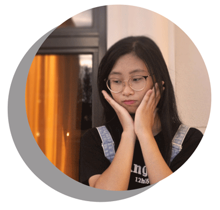

About me
姓名: 蔣 ，欣怡 JIANG ，SIN YI
生日: 91/12/12
個人專長: 平面繪圖設計
連絡電話: 09-29236400
學歷
- 台南市南臺科技大學 視覺傳達系商業設計組
- 桃園市天主教振聲高級中學 多媒體設計系
- 桃園市會稽國民中學
- 桃園市會稽國民小學
經歷
- 高二上 學藝股長
- 高二下 學藝股長
- 高一上 學藝股長
- 高一下 學藝股長
能力
- 印前製程-圖文組版PC 丙級
- 印前製程-圖文組版PC 乙級
- 參加振聲高中設計群科畢業展 形象海報設計 榮獲佳作
- 參加振聲高中設計群科畢業展 微電影類創作類 榮獲優選
- 參加桃園市人口普查創意宣傳短片競賽 高中職組第二名
- 參加振聲高中設計群科畢業展 攝影類 榮獲優選
- 參加振聲高中設計群科畢業展 綜合創作類 榮獲佳作
- 參加振聲高中書籤設計比賽榮獲 佳作
- 保德信青少年服務 志工菁英獎
關於我
- 1.現讀之學系
- 本人現就讀於南臺科技大學視覺傳達設計系商業設計組，擔任學生。
- 2.我的個性
- 我是個活潑開朗、EQ 高的女孩，總喜歡把微笑掛在臉上，與人親近，因微笑是人最好的溝通方式。朋友都說我是不太容易生氣的人，我只是
覺得生氣既傷感情又不能解決問題，而且氣頭上時，說出來的話總是最傷人，不如冷靜下來，思考自己是不是哪裡做錯，或是雙方有什麼誤
會，如果是意見不合，想想該如何說服對方，或著試著接納看看對方的意見 - 3.學習方面
- 我從小就不是個聰明會讀書的孩子，成績都普普或中下，唯一擅長的只有跑步，我運動細胞算好，所以每到運動會總會有人邀我去參加比賽，
就這樣參加了許多次比賽，了解到團體比賽不只是比賽，更重要的是過程，一棒能夠接一棒，是大家一次又一次的練習，才沒有失誤，速度
也是，即便我能力好，也還是需要練，因為想更精進自己不停留於原地，而能力不好的可以互相學習教一些技巧，多練習也會進步， 所謂的
駑馬十駕功在不捨，一起互相監督、改進，中間發生意見分歧，也得想盡辦法解決，畢竟比賽就近在眼前時間不等人。